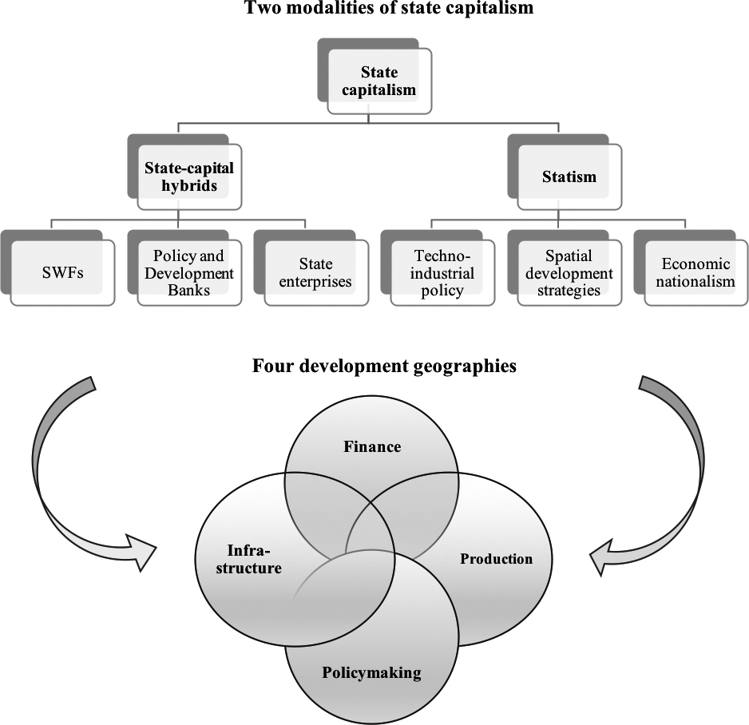

14 State
The capitalist state, which includes the police, the army and institutions such as the civil service and legal system, exists to suppress any radical attempts at change. In the last resort, the state has armed bodies that can arrest protesters, kill revolutionaries and break up demonstrations and strikes.
14.2 Macro-Financial State
The state has become a collateral factory for modern financial systems. In derisking government bonds for market-based finance, central banks may be simultaneously improving financing conditions for governments, but this is a side-effect, not a policy target as in Keynesian monetary policy. Central banks take a “macro-financial view” of sovereign bonds that stresses their critical role in modern finance. Private credit creation – the bread and butter of central banks’ operations – fundamentally relies on the dynamics of sovereign bond markets, the collateral factory for a collateral-intensive financial system.
In this macro revolution without revolutionaries, central banks have been remarkably suc- cessful at breaking the monetary taboos that they have worked hard to construct, without having to specify in detail the boundaries of – and therefore their accountability in – the new policy regime.
Under financial globalisation, government bonds have become the cornerstone of modern financial systems increasingly organised around capital markets, wholesale funding markets, and derivative markets, or what central bankers term “collateralised finance”. Private financial instituti- ons – from pension funds to insurance companies, hedge funds, or banks – hold government bonds for regulatory purposes, demand them for speculative reasons, use them as collateral to get cheap leverage via the repo market or to back derivative transactions, and run to them during bad times because government bonds are viewed, rightfully or not, as the ultimate risk-free asset.
A macro-financial view of government bonds brings the concept of market liquidity to the core of central banking. In financial systems organised around collateral, the distinction between market and funding liquidity becomes critical.
Funding liquidity captures the ability of commercial banks to convert deposits into cash at parity, which is a challenge during times of crisis when depositors lose faith in banks. Historically, this challenge has been solved by deposit guarantees and emergency central bank loans, against collateral, under the lender of last resort umbrella.
In contrast, market liquidity refers to the ability of bondholders to buy and sell bonds without generating price volatility. In collateral-based financial systems, market liquidity matters because a fall in bond prices creates funding pressures for financial institutions reliant on those bonds to collateralise their wholesale funding – as prices fall, their lender will call margin, that is, they will ask for additional collateral in order to bring the market value of the collateral portfolio they hold back to the level agreed in the transaction.
Central banks can only prevent liquidity spirals – where marked to market funding positions deteriorate, leading to firesales of bonds, and further margin calls – if they intervene directly in those bond markets that are an important source of collateral (interventions directed to provide market liquidity of last resort) and prevent prices from falling. Financial stability in shadow banking, or market-based finance, means supporting liquidity in collateral markets in times of stress in addition to supporting banking institutions, as in the traditional lender of last resort.
Shadow monetary financing is conducted to support market liquidity in government bond markets, and thus financial stability. The safe asset status of government bonds is not sufficient to generate a reliable source of private demand during bad times.
There are significant political challenges that central banks have sought to circumvent by downplaying in public the importance of this new regime.
In market-based financial systems, the fiscal authority and the monetary authority, however “independent” by institutional design, fundamentally play the same role: a central bank to modern, market-based finance.
The infrastructural power of market-based finance, whereby central banks and fiscal authorities rely on private financial institutions as the governance infrastructure for macroeconomic policy.
It undermines the institutional hierarchy implied by monetary dominance, but because it implies central banks cannot be successful, even on their own inflation-targeting terms, without new mechanisms of coordination with fiscal authorities.
We’ve seen an accelerated move to a market-centric system from the bank-centric system that has tended to prevail in Europe,” Lamfalussy said in London last month. “I have no doubt that a market-centric system is more efficient, but there‘s a question whether it is stable.” The key to stability, he concludes, is a liquid and transparent go- vernment debt market.
In stark contrast to the Keynesian era, central banks now openly admit that they have the power to make sovereign yield targets credible. Not even the Bank of England – at the height of its supposedly dominance by fiscal authorities – accepted that it could enforce a desired cap on long-term yields. Neither did the US Federal Reserve.
The macro-financial institutional infrastructure needs upgrading so that states can deal better with future shocks, which is inevitable with the climate crisis. Europe can ill-afford to pretend that a shadow regime of cooperation between central banks and governments is sufficient.
The further concentration of political power in unelected, albeit well-intentioned, central banks threatens to sacrifice green fiscal activism – that is, fiscal support for the low-carbon transition – on the altar of central bank independence.
14.3 Lobbying
In the three years following the Paris agreement it was reported that the largest five stock market listed oil and gas companies spent nearly $200m (£153m) a year lobbying to delay, control or block policies to tackle climate change.
14.4 State Capitalism Development Regime
Alami
Ofcial discourses of Development are being redened. If the key geopoliti- cal contexts shaping the post-war Development project were decolonisation and the Cold War, the dening world-historical transformations shaping the emerging vision of Development are the expansion of state capitalism and the rise of China. The IMF, the World Bank, the OECD, the G20, other multilaterals, and bilateral partners are increas- ingly taking stock of the rise of state capitalism, and acting as ideational vectors of this emerging regime. However, this new “state capitalist normal” is also portrayed as carry- ing risks. There is anxiety regarding the direction the political form of global capital accumulation is heading: with the unchecked proliferation of state capitalism possibly blunting competition, politicising economic relations, and intensifying geoeconomic ten- sions. This anxiety underwrites the current re-articulation of Development, one which embraces the state as promoter, supervisor, and owner of capital; even as it critiques China’s use of similar instruments.
Beyond ‘Aid’
In April 2015, the Development Committee of the World Bank and the International Monetary Fund, in collaboration with other multilateral development banks, produced a discussion document titled “From Billions to Trillions” (Development Committee 2015). The slogan neatly conveys the argument that the size and capacity of foreign aid is limited. At roughly $160 billion annually, aid is nowhere near able to cover the financing claimed to be necessary to achieve the Sustain- able Development Goals (SDGs). Even if every donor met the 0.7% GNI target, it would still fall short of the trillions of dollars required. Instead, the mantra makes a definitive turn to private capital from advanced and major emerging economies as providing the lion’s share of development finance, with Development now funded and conceived as “beyond aid”.
The project, reiterated in the World Bank’s 2019 “Maximizing Finance for Development” agenda (MFfD), promotes state-supported private finance in the name of development (World Bank 2019). It portrays “access to finance” as a central developmental priority, encouraging and facilitating financial “deepening” and “inclusion”, the re-engineering of domestic financial systems around securities and derivatives markets, and the creation of “investable” opportunities in infras- tructure, water, climate adaptation, health and education. It normalises and relies on novel financial instruments such as development impact and infrastructure bonds; debt, equity, and mezzanine financing; guarantees, swaps, and so on, opening up new circuits and places of risk and reward. The MFfD agenda and its promotion of state-supported private capital may well signal the “very death of Development itself (the latter understood as a process/set of processes attached to modernist notions of material progress)”.
Without discounting the persistence of neoliberal thinking in this agenda, nor the pivot toward Wall Street, our contention is different: what we are currently witnessing is not so much the death of Development, but a significant redefinition of the Development project, in the context of the restructuring of global capital- ism and profound geopolitical shifts. This redefinition is not only characterised by the further entrenchment of the centrality of market regulation, but also, crucially, by a strategic ideological adjustment concerning the place of the state in Develop- ment, including a partial embrace of its role as promoter, supervisor, and owner of capital. This emerging vision of the state is the core focus of this article: we offer an in-depth analysis of its key (geo)political economic determinants, identifying its main contours, and critically interrogating the political role that it plays in the global development regime.
One of the defining features of the world economy over the past fifteen years has been the return of state capital- ism, which broadly refers to configurations of capitalism where the state plays a particularly strong role in organising the economy and society, in supervising and administering capital accumulation, or in directly owning and controlling capital.
We see the current rise of state capitalism as a variegated world- historical phenomenon rooted in the historical development and geographical remaking of capitalism.

A gradual “normalisation” of the role and place of state-capital hybrids in the global economy is under way. An articulation of a new vision of the state. The emerging vision is characterised by an embrace of a fuller role of the state in Development (than the post-Washington Consensus), including as promoter, supervisor, and owner of capital. “The goal is to professionalize and depoliticize(!) state ownership” (World Bank)
The emerging view of the state strives to extract some forms of state ownership (the modern, professionally managed, well-governed, market-oriented state-capital hybrid—possibly indicating one in which management consultants and large-scale contractors play an increas- ingly central role in both policy formation and service delivery) from the very cate- gory of the political. This is not so much a relaxation of the liberal stance on state ownership (even less so a move away from it) as a mutation of it, one that allows preserving and reaffirming a clear-cut separation between the economic and the political under a new guise, and one that simultaneously (supposedly) establishes a clear distinction between liberal and illiberal forms of state-capital hybrids.
By presenting certain types of state-capital hybrids as post-ideological, depoliti- cised creatures, the new view can delineate a liberal role for the state as owner of capital in Development, legitimating some uses and forms of state-capital hybrids, while delegitimating others and negating their role in Development.
Transforming the “old”, inefficient, corruption-prone state-capital hybrids into fully legit eco- nomic and development actors is presented as a process of modernisation. Devel- opment, then, also consists in modernising state-capital hybrids, by “strengthening the quality of governance”, “professionalising government owner- ship”, “strengthening commercial orientation”, “introducing independent boards of directors”, “improving firm-level financial incentives”, adopting “modern risk management practices” and “effective governance frameworks”, and the like.
With the emerging vision, the notion of modernisation of state-capital hybrids has experienced a mutation too: throughout the 1990s, modernising state-capital hybrids simply meant privatising them (under almost any circumstance). By con- trast, in the 21 st century, modernising state-capital hybrids means turning them into organisations that mimic the practices and organisational goals of compara- ble private-sector entities, adopt the techniques of liberal governance, and are broadly market-confirming. Furthermore, as they articulate this new vision, multi- laterals present themselves as centres of knowledge, technical expertise, and self- endorsed authority to assist in this process of modernisation.
Reports from multilaterals emphasise that there is a need for tradi- tional development actors “to react”, “adapt” and “draw lessons” from the cur- rent rise of state capitalism. This may be seen as explicit admissions that these actors are struggling to remain relevant in a rapidly changing world. This must be interpreted in light of the role that they play in the governance of global capitalism: these are liberal institutions fundamentally con- cerned with lifting barriers to the accumulation of capital and with facilitating its flow on a planetary scale.
The articulation of this new vision of the state in Development as playing a fundamentally political role: it is an attempt at minimising the multiple risks and dangers that are per- ceived to be associated with the current rise of state capitalism. This includes min- imising the potential for the political “use” of state-capital hybrids, which would risk creating a further (geo)politicisation of economic relations and a spiral of pro- tectionism, particularly in the tense geopolitical context. Controlling the proliferation of state-capital hybrids and making sure that they assume liberal forms.
We see the discursive re-legitimation of the state in Development, and its limited embrace of state-capital hybrids, as a strategic ideological adjustment to preserve and further enshrine the centrality of market regulation in Development in an age of rising state capitalism and turbulent geopolitical reordering.
Two interrelated transformations are particularly important. First, the current rise of state capitalism, which we understand as a world-historical phenomenon rooted in the development and geographical remaking of capitalism. The political mediation of this process of capitalist restructuring by the state (at multiple scales and across the global North/South divide) has resulted in the uneven and combined development of more muscular forms of statism and the expansion of state-capital hybrids. Sec- ond, the rapid development of China, and the intensification of competition between traditional powers and emerging contenders, have increasingly politi- cised the rise of state capitalism and escalated geopolitical tensions.
Combined, these two global transformations have partially fractured the geographies of production, development finance, infrastructure, and policymak- ing, prompting traditional development actors such as multilaterals to react to this new “state capitalist normal”. Our key contention is that such reaction has taken the form of a strategic discursive and ideological adjustment (involving a certain re-legitimation of the state in Development, and a limited embrace of state-capital hybrids) which has been buttressed by a profound apprehension for the direction in which the political form of global capital accumulation may be heading.
Alami 2021 State Capitalism and the New Global Development Regime (pdf)
Modern Fossil States
14.5 Civilized Capitalism
Concept: ‘Civilized Capitalism’
The only social responsibility of a company is to maximize its bottom line. -Free markets will ensure that society benefits as a result. This narrative makes it seem reasonable to eliminate social controls – precisely the opposite of what needs to be done. Governments have been under the spell of this narrative for nearly 50 years despite a flimsy scientific foundation and ample evidence for its harmful effects. We can break the spell of the old narrative by noting something that will appear utterly obvious in retrospect: The unregulated pursuit of self-interest is cancerous at all scales. To create a global village, we must look to real villages.
Evolition Institute: Blueprint for the Global Village
14.5.1 Norway’s Double Standard
Norwegian foreign policy no doubt plays a positive role in world affairs, also aiming for a “civilized capitalism,”
Norway is the country that has pressed the UN to accept guidelines that make not only states, but also multinational companies, liable for violation of human rights. Also, Norway is currently the world’s most active advocate of corporate social responsibility on all international arenas.
For all its success and wisdom, the management of the state pension fund illustrates that even Norway is sometimes guilty of selfishly feathering its own nest at the expense of other nations, the planet, and, therefore, ultimately its own welfare over the long term.
If we go further and ask whether the investments are to the benefit of the long-term welfare of the global village, the answer is very close to a “No.”
The main goal of the fund is maximum return, and although Norway has set up to 3 billion NOK aside for preservation of rainforests, it has also (at least up to now) invested heavily in logging companies replacing rainforest with palm oil. There are also heavy investments in mining industries, coal and oil companies, and other activities that do not contribute to a sustainable future.
Norway’s double standard at the highest rung of the social ladder is typical of most nations.
The plight of Norway when it chooses how to invest in the global market. Like a snail, it might want to emerge from its shell and support the most ethical enterprises. But to do so might be too costly in a market environment that rewards naked selfishness. Norway might be required to shrink into its shell and make selfish investments to survive.
14.6 The State is the manifestation of The Free Market
vk in comment to Branko Milanovic
From the point of view of Marxism, the State is not an independent actor from capitalism. This is made very clear by Marx, for whom the State is the amalgamation of class dominance that emanates from the development of capitalism.
Extrapolating for any mode of production, we have that the State is the manifestation of class struggle of said mode of production, e.g. the feudal State, the ancient State etc. etc. The State is always born from the mode of production, never the inverse: the State is the superstructure of the mode of production.
In the specific case of capitalism, if we apply this concept, we have that the State, ultimately, is the neutral arbiter of the free market. Someone has to enforce private property, otherwise, the physically stronger will always expropriate the physically weaker, no matter if the weaker is wealthier than the stronger. Private property would self-destruct into the raw Survival of the Fittest.
Hence capitalism cannot exist without the State. The free market is, ultimately, artificial: it does not exist in nature.
Yes, intercapitalist struggle is constant and structural, according to Marx. The capitalist class oppresses the working class as a whole, i.e. as a class, but, at the individual or regional level, capitalist rivalry do and must exist. Marx himself tells us the example in Capital, where capitalists from one specific sector make political campaign to higher wages… in the other sectors. In its most acute form, there is a total war: WWI was the quintessential intercapitalist war, the so-called interimperialist war par excellence. It brought the end of classical liberalism and paved the way for the so-called neoclassical economy.
Again, it is easy to visualize why pure capitalism without the State and, as such and with, without ferocious and to-the-death intercapitalist competition, is impossible: imagine the perfect capitalist world, where every adult male divides equally planet Earth between themselves (including all the females in the planet, that is, each one will be a family), as capitalists. Each portion of this planet will be an individual capital, owned by exactly one family. Free market competition begins, in a way everything that happens to each individual capital will be the result solely of free, purely meritocratic, capitalist free market competition.
The first problem arises: planet Earth is not equal in all of its parts: some families will receive a wasteland, while others will be sat on gold mines, while others will be spawned in fertile lands. But the most important one here would be the families who would inherit the water.
The capitalists who own the water would then subjugate the rest, in a domino effect, until they become the new oligopoly. They would then amass this accumulated rent profit, this superprofit, to then mount a military sector, which would then subjugate the rest. If the water capitalists don’t manage to unite wholly at once, then it is a simple matter of a shock of titans, an interimperialist war to decide which water oligopoly will reign supreme. The process will then continue as normal, until all the weaker capitalists will be enslaved and proletarianized (i.e. transformed into the working class). The ones who resist would be killed, which means they would “exist the game”. Meritocracy and fair competition break down as moral-ethic concepts.
Obviously, really existing capitalism doesn’t behave that way. That’s because the State, as the high council of the capitalists, arises as capitalism develops. First of all, because capitalism isn’t born from a virgin planet Earth, but from the contradictions of feudalism, so the capitalist class has to gain class consciousness in order to topple the feudal dominant classes before properly founding capitalism. Second, the working class is born from from already existing relations of production, not from a race of fallen capitalists. So the working class already “exists” the moment the capitalist class gains class consciousness. Third, as capitalism becomes hegemonic and so does grow the working class’ class consciousness, so does the State develops, as the neutral arbiter of the free market, of which one of the functions is to administer and equally distribute among the members of the capitalist class the so-called “inherent monopolies” such as water, land as abstract space (property rules of land), and war (modern day terminology: defense). That’s why the capitalist classes around the world – including the American one – accept that the State has the monopoly of the Armed Forces: if it was in private hands, this capitalist would use it to dominate all the other capitalists.
Nowadays, the State as the neutral arbiter of the free market is called “minimum state”, in order to differentiate this essential function from its expanded function, which is to also administer the welfare state (which the social-democrats also call the “social wage”, because it gives the working class a series of services that are essential to its comfort). The Neoliberal faction defends the State should go back to just do its original function, i.e the “minimum State”, while the Keynesian, Social-Democratic faction defends the State should be “maximum” i.e. accumulate both the function of the neutral arbiter of the free market and build and administer the welfare state.
To sum it up, the State not only is not alien to capitalism, but is the manifestation of the Free Market itself.